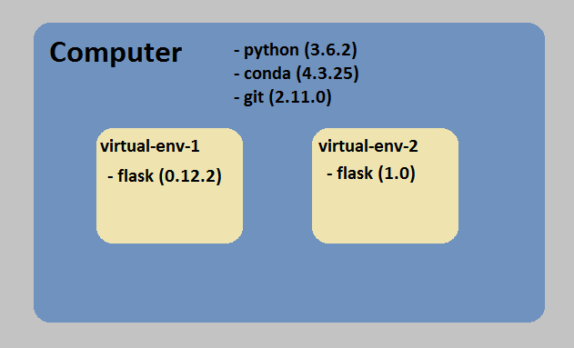

class: center, middle # Unit 2 ## Web Fundamentals --- class: center, middle # LC101 Alum: Megan Hart ### Lumeris --- class: center, middle # [Class 3](https://education.launchcode.org/web-fundamentals/class-prep/3/) Lecture --- ### General Reminders - You MUST do the Class Prep - Code with the videos - HTML-Me-Something due Thursday - Read carefully - Follow the instructions to turn it in - If you are done, you can demo to your TA today --- class: center, middle ## No Studio Solution Today --- ### Topics - HTTP - Creating a Web App with Flask --- ### HTTP - Example: GET https://www.google.com responds with the html which displays the homepage - Let us check this out using our Dev Tools. --- ### Web App/HTTP(S) Demo - Open a web browser - Open dev tools and go to the network tab - Navigate to https://www.google.com - Click the www.google.com call in your network tab - Click on the headers tabs --- ### Web App/HTTP(S) Demo - (Don't code, just watch here) - cURL command from terminal - "Teach" my Linux command line cURL - curl http://google.com - curl https://google.com --- ### Flask - A python framework for making web apps - A web app is a program on a server that creates html in respone to user actions - What is the difference between static webpages and dynamic webpages? Examples? --- ### What is a Python Framework? - Python files already written that we use - It does something useful - It has rules/conventions - It has functions/Classes we can use - Check out the docs [here](http://flask.pocoo.org/) --- ### Some Commands from the Tutorial - `conda` is a command we "taught" our terminal during the `initials.py` assignment - Think of the Miniconda software as a python package installer - `conda create -n hello-flask` - Creates a virtual environment - What exactly is a virutal environment? - Used to control dependencies/versions --- <div class="fill">  </div> --- ### Some Commands from the Tutorial - `source activate hello-flask` - `conda install flask` - Why don't we have to: - `conda install math`? - `conda install random`? --- ### Some Commands from the Tutorial - What happens when we run `python main.py` (from Class Prep)? - What shows up in the terminal? - Let's run these commands and do another example... --- ### Demo - Create a new project directory in your `lc101` folder - Create a new environment using `conda` - Activate your environment - Install `flask` in your enviroment - Make a web app - Run the app --- class: center, middle # Q&A --- class: center, middle ## Studio Walkthrough ### [Flicklist 1](https://education.launchcode.org/web-fundamentals/studios/flicklist/1/) --- ### Studio Walkthrough - Navigate to your `lc101` folder - Clone the [flicklisk-flask project](https://github.com/LaunchCodeEducation/flicklist-flask) - Now we have a local copy! - Remember, we need to `cd flicklist-flask` to access it. - Good luck! --- class: middle, center #[Survey](https://www.menti.com/)